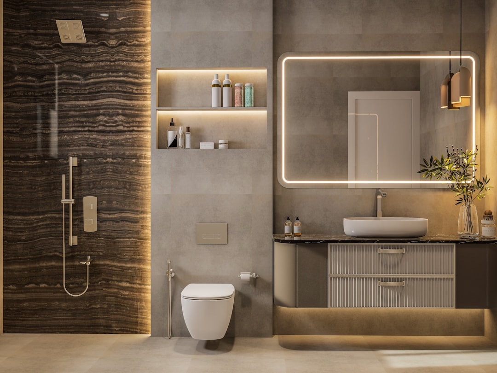

A successful Brisbane bathroom renovation starts with a clear plan: a workable layout, finishes suited to a subtropical climate, and a realistic budget and timeline before any tiles come off the wall. In Brisbane a bathroom renovation typically runs from about $22,000 upwards depending on scope, and the work commonly takes two to four weeks once it begins. Structural or plumbing changes in Queensland need a QBCC licensed builder, and work altering the building generally requires council approval. The best ideas balance style with ventilation, waterproofing and the character of the home, whether that is a classic Queenslander or a modern build.
For local buyers, bathroom renovation ideas brisbane walks through design ideas, layout planning, finish choices and the approvals and timelines that shape a Brisbane bathroom project
Bathroom Renovation Ideas Brisbane Explained
The strongest bathroom renovation ideas for a Brisbane home begin with the climate and the house itself. Brisbane's subtropical conditions mean humidity, ventilation and moisture control matter as much as the look of the room. Good ideas here tend to combine a bright, open feel with finishes that shrug off warm, damp air: large-format tiles that limit grout lines, quality exhaust ventilation, and surfaces that stay easy to clean year round.
Popular directions include a spa-style retreat with a freestanding tub and walk-in shower, a streamlined ensuite that maximises a tight footprint, and a light, neutral palette that suits both the light-filled rooms of a classic Queenslander and a contemporary design. Because Brisbane spans everything from character timber homes to modern builds, the right idea is the one that respects the existing home rather than fighting it. Renovating is a form of home improvement that works best when the new design reads as part of the house, not bolted on.
If you are weighing a bathroom against a larger project, it helps to understand what home renovations cost in Brisbane across the different room types before you commit, so the bathroom sits sensibly within your wider plans.
Planning the layout and getting the design right
Layout is where most of the value in a bathroom renovation is won or lost. Before choosing tapware or tiles, map how the room will actually be used. A redesigned layout can move a shower, reposition a vanity or open up a cramped corner, but any change to plumbing points adds cost and complexity, so it pays to settle the plan early.
Sensible planning steps include:
- Set the zones first, keeping the shower, toilet, basin and storage in a logical flow.
- Decide early whether plumbing points move, since relocating them is one of the bigger cost drivers.
- Prioritise ventilation and natural light, both critical in a humid Brisbane bathroom.
- Choose durable, moisture-friendly finishes and plan storage into the design rather than adding it later.
- Confirm waterproofing scope, as it underpins everything installed on top of it.
Thoughtful cabinetry and joinery make a small bathroom feel far larger. Well-planned cabinetry and a vanity sized to the space keep clutter down without crowding the room. Getting the design documented before work starts also gives any builder a clear scope to quote against, which reduces surprises once the job is underway.
Finishes, fixtures and creating a spa-like feel
Finishes are where a bathroom idea becomes a room you enjoy. Premium fixtures, considered tiling and quality tapware turn a functional space into a genuine retreat. In Brisbane homes, a spa-like result usually comes from a small number of deliberate choices rather than every surface competing for attention: a feature tile behind the vanity or in the shower, a warm or neutral base palette, and good lighting layered between task and ambient.
Fixture selection also shapes the running cost of the room. Water-efficient tapware and showerheads, durable vitreous surfaces and sealed stone or engineered benchtops all last well in a humid climate. Where budget allows, underfloor heating, a rainfall shower or a freestanding bath lift the sense of luxury, but even a modest refresh of tiles, vanity and tapware can transform a dated room. Frameless glass, a well-proportioned mirror and recessed shelving are small touches that make a shower feel more open and the whole room more considered. A complete bathroom transformation, from layout redesign to premium fixture installation, is a common scope for Brisbane renovators aiming for a lasting result rather than a quick cosmetic patch. Matching the finishes to the era of the home, whether a character Queenslander or a contemporary build, keeps the result cohesive rather than at odds with the rest of the house.
Budget, timelines and what a Brisbane bathroom costs
Budget and timeline set the boundaries for every idea on the list. In Brisbane, bathroom renovations typically start from around $22,000 and rise with the scope of the layout changes, the quality of fixtures and the extent of waterproofing and tiling. A straightforward cosmetic refresh sits at the lower end, while a full layout redesign with premium finishes runs higher.
On timing, a bathroom renovation commonly takes two to four weeks of on-site work once it begins, though the overall project is longer once design, ordering and any approvals are counted. Because a bathroom is a wet area, waterproofing and tiling stages cannot be rushed without risking the finish. If a bathroom is one part of a broader project, or you are also planning a home extension, sequencing the trades across both jobs can save time and reduce disruption. Setting a realistic budget with a contingency for the unexpected, such as hidden water damage or old plumbing, keeps the project on track.
Approvals, licensing and who this guide is for
In Queensland, renovation work carries clear licensing and approval rules. Building work valued over $3,300 must be carried out by a licensed builder holding a current QBCC licence, and bathroom work involving plumbing or structural change falls squarely within that. Where a renovation alters the building's structure or footprint, council approval is generally required, and internal-only cosmetic work usually is not, though it is worth confirming for your specific project.
This guide is general information for Brisbane homeowners rather than advice for a specific project. It is most useful if you are planning a bathroom refresh or full redesign, comparing ideas before requesting quotes, or trying to understand where a bathroom fits within a larger renovation. For advice specific to your home, a licensed builder or a building certifier is the right point of contact. Choosing a builder who understands Queenslander homes, the subtropical climate and Brisbane council requirements gives any bathroom idea the best chance of being executed well.
- Set the brief. Decide whether you want a cosmetic refresh or a full layout redesign, and note must-haves.
- Plan the layout. Map zones for shower, toilet, basin and storage, and confirm whether plumbing points move.
- Choose finishes. Select moisture-friendly tiles, tapware and cabinetry suited to Brisbane's humid climate.
- Set budget and timeline. Allow from around $22,000 upward and two to four weeks on site, plus a contingency.
- Confirm approvals and builder. Check council approval for structural work and engage a QBCC licensed builder.
| Factor | Cosmetic refresh | Full redesign |
|---|---|---|
| Typical budget | Lower end, from around $22,000 | Higher, with layout and premium finishes |
| Layout change | Fixtures stay in place | Plumbing points may move |
| On-site time | Toward two weeks | Toward four weeks or more |
| Approvals | Usually internal-only | May need council approval and a QBCC builder |
Common questions
How much does a bathroom renovation cost in Brisbane? Brisbane bathroom renovations typically start from around $22,000 and rise with the scope of layout changes, the quality of fixtures and the extent of waterproofing and tiling. A cosmetic refresh sits at the lower end, while a full redesign with premium finishes costs more.
How long does a bathroom renovation take? On-site work commonly takes two to four weeks once the job begins. The overall project runs longer once design, ordering fixtures and any council approvals are counted, and wet-area stages such as waterproofing and tiling should not be rushed.
Do I need council approval or a licensed builder for a bathroom renovation? In Queensland, building work over $3,300 must be done by a QBCC licensed builder. Work that alters the building's structure or footprint generally needs council approval, while internal-only cosmetic work usually does not, though it is worth confirming for your project.
This guide covers bathroom renovation ideas, layout planning, finishes, budgets, timelines and the approvals and licensing that apply to Brisbane homes.